Timeline
-
{{item.title}}
{{item.date}}
Work PortFolio
- Assistant Manager – Healthcare Analytics, Baby Memorial Hospital, Kozhikode, Kerala. July 2020 – Present
- A Nursing MIS & QMS system that covered critical clinical and administrative workflow of nurses and informative dashboard that gave live feed of ground situation to top level managers of the ground situation at various nursing a stations.
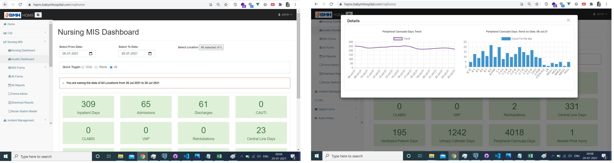
- A complete Hospital CQI module in line with NABH and JCI requirements that can be completely maintained at user level with interactive dashboard for cqi, monthly record updating by quality admins, and maintenance of master.

- A Document Management System (DMS) with complete features including version-controling,multiple document types (SOPS, MoU, Agreements, Licenses,department Manuals, etc) , verification ans approval workflow, dashboard, document expiry alert systems etc
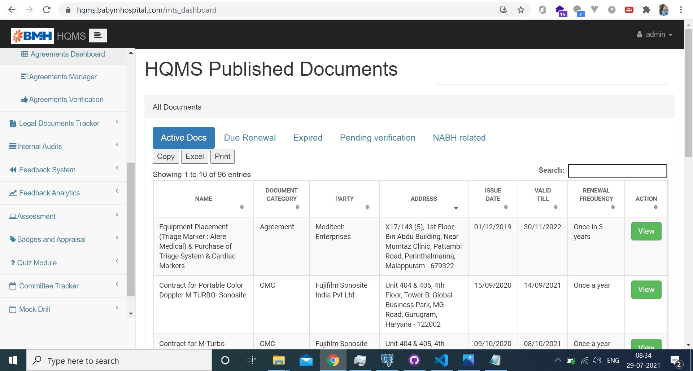
- A Feedback Analytics Engine and module that can be used to make custom forms on the fly and can be distributed. and also a dedicated engine for analytics with custom dashboards.
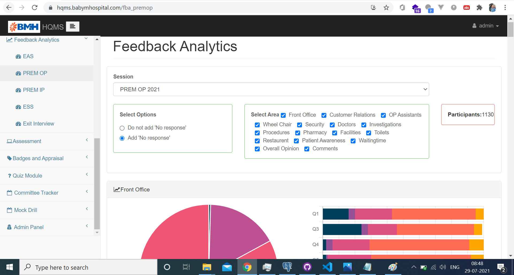
- A Badge Appraisal System similar to LinkedIn kudos, that can be used to mark the employee performance over the course of a year and used to appraise them.
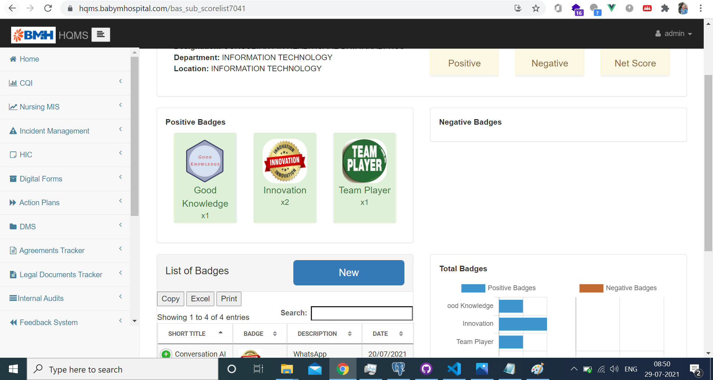
- A Quiz & Games application that comprised to three games: Crosswords, wordsearch and jumble words. The games can be designed by user on the fly. this can then be distributed for the staff to play & submit their results. this was designed with the concept of "learning through gamification" in mind.
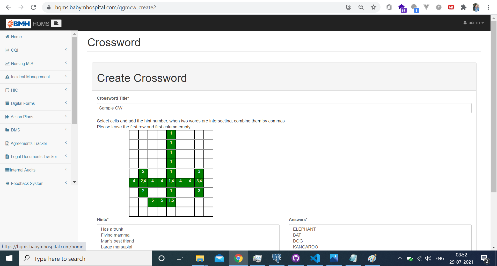
- An E-learning & Assessment Platform with courses and their reference materials can be created. the participants can enroll for various types of courses and training upon completion of which the participants are issued automated certificates.

- An internal Quality Audits Module based on the NABH 5th edition that is completely administeredby the quality department. the standards, checklists, and locations are maintained as masters and can be edited/updated by admin users. the audits can be scheduled and teams can be created. the digital checklists can be used for audit assessment. the automated reports will be generated based on the checklist.
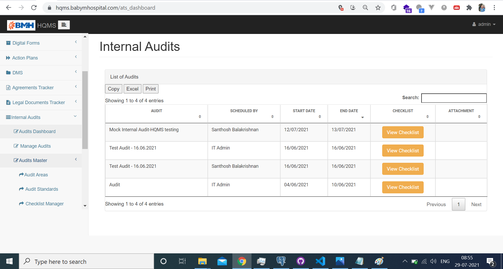
- Assistant Manager – Operations, Baby Memorial Hospital, Kozhikode, Kerala. Jan 2020 – Jun 2020
- Developed a Roster Automation Tool (Rota) for scheduling the roster of a 600 manpower nursing workforce on monthly basis. The tool has been estimated to save ~1400 hours of man-hours in a year. (stack: Python & Django)
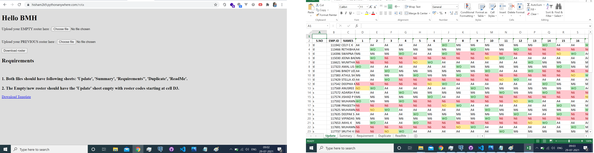
- Created a full-fledged & comprehensive Healthcare Quality Management System (HQMS) covering modules: Incident Management System, (Preventive) Action Plan Tracker, Committee management and meeting g minutes tracker, mockdrill tracker. (Stack: PostgreSQL, Django, Python, Vue.js, Bootstrap, Jquery).
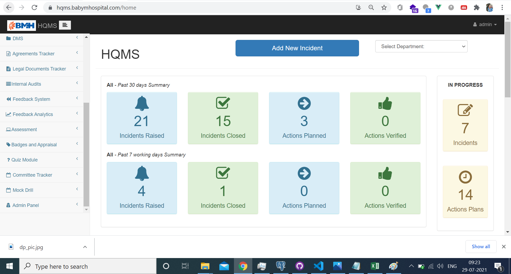
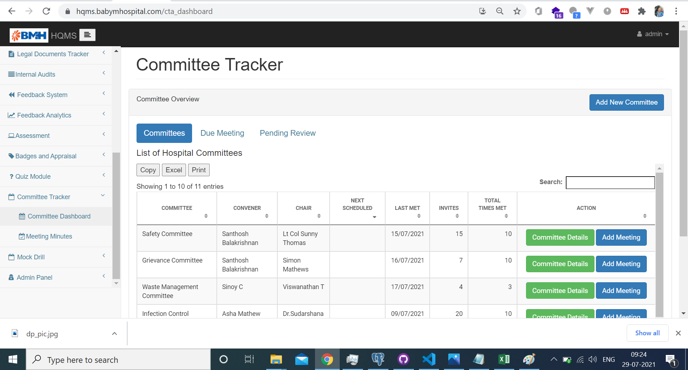
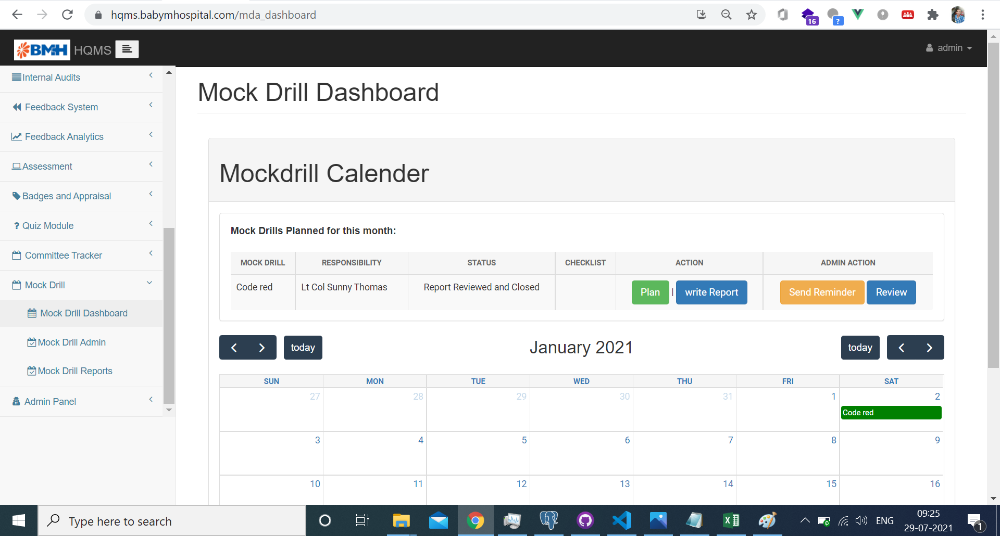
- Created and conducted training module in nursing informatics for Nurse Managers and other nurses in leadership roles spanning over two months. Received an average feedback rating of 4.8 of 5 from the students.
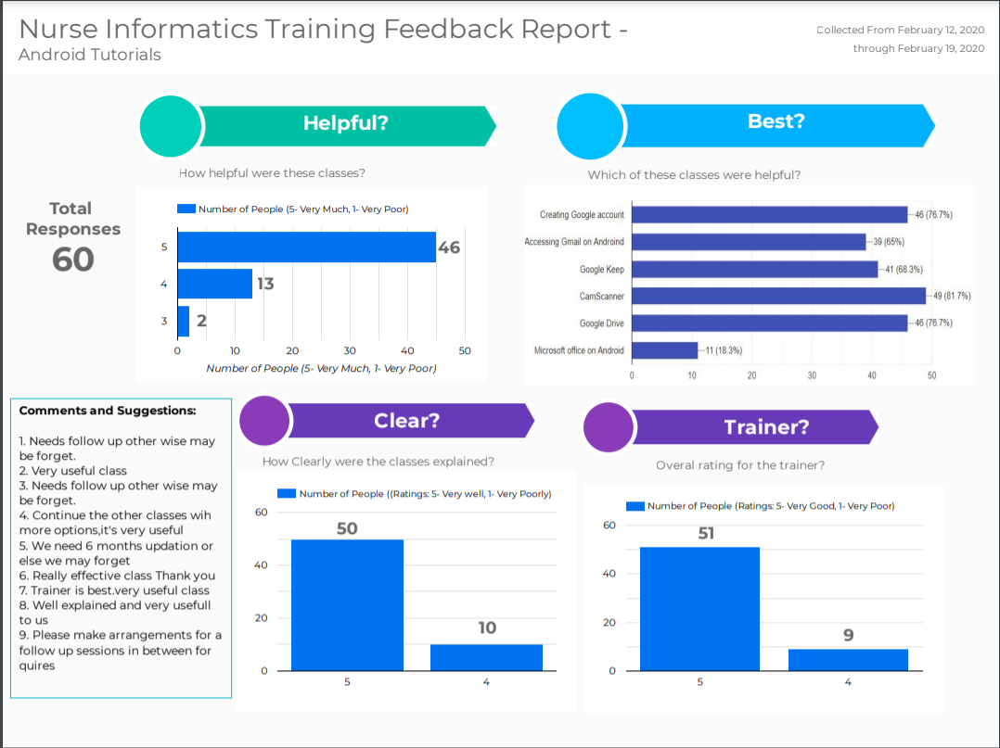
- Regularly created informative Dashboards using tools such as Power BI & Tableau to measure the performance of clinical departments and their outputs.
- Created comprehensive 360-degree metrics for analysing the performance of Nursing & clinical departments.
- Management Trainee - Operations, Baby Memorial Hospital, Kozhikode, Kerala. Jul 2019 – Dec 2019.
- System Analysis & Design of IT-enabled Nursing MIS. Designed system for automating and IT enabling nursing processes.
- Carried a brief study on scope for lean initiatives and improvement at the Emergency department. The outcome included significant improvement in terms of nurse satisfaction, reduced patient Turn- around Time of 40%, among many other intangible benefits.
- Lean Six Sigma project on improving Discharge process. Proposed solution for reducing discharge TAT from 3 to 1.5 hours.
- Coordinate, monitor and report day to day operations of clinical Unit to COO and Chief of Medical Services.
- Several Business development and clinical research activities for the Cardiology Unit of the hospital.
- Analytics & IT Consulting. Mar 2014 – Present.
- Consulted and Published multiple academic papers on Healthcare, Machine Learning, Medical documentation and ethics where my primary role was that of an Analyst.
- Worked on an Academic Paper Review of Healthcare system and infrastructure across BRICS Nations and How these countries changed over time. The study also focused on how and what India can learn from the rest of the BRICS countries. My role in the project was that of an Analyst diving deep into data and literature, cleaning dataset, organizing and summarizing conclusions. The work is published in JCDR, a reputed Academic Journal and I am the First Author for the project.
- Worked on a Case-Study on effectiveness of Telemedicine during Covid-19 pandemic in a tertiary care hospital. My role in the project was that of an analyst.
- Comprehensive Online/live dashboard for India & Rest of the world during Covid-19 Pandemic hosted at AWS and pythonanywhere. The website garnered 12,000 users during April & May 2020. The data garnering was automating with multiple APIs and Scheduled web-scrapping. The project used MySQL, Django, Vue.js and is Open-sourced on GitHub.
- Comprehensive Incident Management System with RCA and CAPA maintained as Open-Source Project on GitHub.
- Created and successfully tested model for predicting Patients footfall of clinical department with a variance score of 87% and SE of ± 8 patients. Model developed using ML-libraries in Python. (open-sourced on GitHub).
- Developed and successfully tested a Discharge TAT Predictor with ~80% variance score, developed through in Python (under review for publication). (Source code openly made available in my GitHub).
- Designed & Developed few utility applications for Windows and Android with Microsoft Visual Studio and published application on Google PlayStore respectively.
- Analyst Intern with Project at Star Care Hospital, Kozhikode, Kerala (2 Months) in 2019.
- Assessing NABH compliance in documentation and providing solutions. Found key lacunae in medical documentation practices as per NABH standards, and designed electronic forms for reducing non-compliance.
- Analyst Intern with Project at VPS Lakeshore Hospital, Cochin, Kerala (4 Months) in 2017.
- Assessing and improving Medico-legal knowledge to nurses and other Health professionals. The project and Outcome published in an International Journal.
Recognitions and Involvements
- Gold Medal: Best outgoing student, School of Allied Health Sciences, Manipal, MAHE.
- Six Badges from IBM for Skills in Data Science & Machine learning.
- Four Research works in Peer Reviewed Scopus Indexed International journals (Three of them as first author).
- Awareness of Medico-Legal Aspects & Documentation amongst Health Professionals– (Medico-legal Update)
- Assessment of healthcare systems across BRICS nations, what India can learn from the rest? – (JCDR)
- Application of Predictive Modelling to improve Discharge Process – (Healthcare Informatics Research)
- Healthcare Delivery Through Telemedicine During Covid-19 Pandemic: A Case Study – (Hospital Topics)
- Served as Member, at Voluntary Service Organization (VSO), Manipal.
Academic Qualification & Certifications
- Master of Hospital Administration, Department of Public Health, Manipal, MAHE (CGPA = 8.9 of 10).
- Applied Data Science Specialist- (39-weeks Professional Certification Program by IBM).
- BSc in Health Information Administration, Manipal College of Health Professions, MAHE (CGPA = 9.3 of 10).
- Data Analytics in Lean Six Sigma Certification (Certificate Course), University of Amsterdam (Coursera Platform).
- Financial Management Specialisation, IMBA Program, University of Illinois, (Coursera Platform).
- Business statistics and Analysis, (Certificate course), Rice University, (Coursera Platform).
- Lean Six Sigma Green belt from Anexas Europe.
- Class 10 and 12 from International Indian School Jeddah, Kingdom of Saudi Arabia (CBSE, 88.4%).
Recommendations
"Sayed Hisham has been working directly with me for the last 2 years and during this period he had developed a full fledged IT system for efficient and effective management of health care quality in the hospital. He had self learned the programming languages & tools, analysed the requirements, designed the system, coded, tested and rolled out the various modules over a period, with minimal supervision. He is an avid learner and his analytical skills are commendable. He is keen to learn new things and take up challenges. He is very systematic in analysing & solving problems and proficient in analytical tools."
"I know Sayed Hisham ever since he has been working at our Organization. He is a very talented academician and good organizer. When given tasks or projects, he diligently works on it and completes it on time to the satisfaction of all concerned. He is a good teacher too and is able to get across his points to the audience clearly and explicitly. His interpersonal relationships are excellent and he is quiet and soft spoken with good communication skills. His character and conduct are above reproach"
-Dr. Sahasranam K V, Chief of Medical Services, Baby Memorial Hospital,